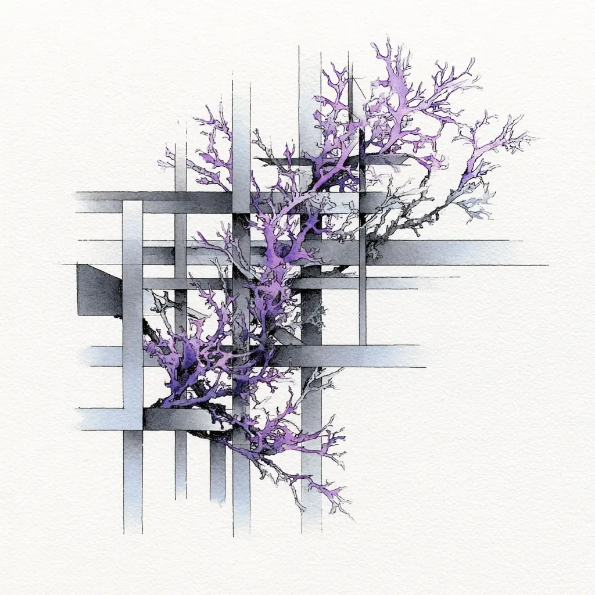
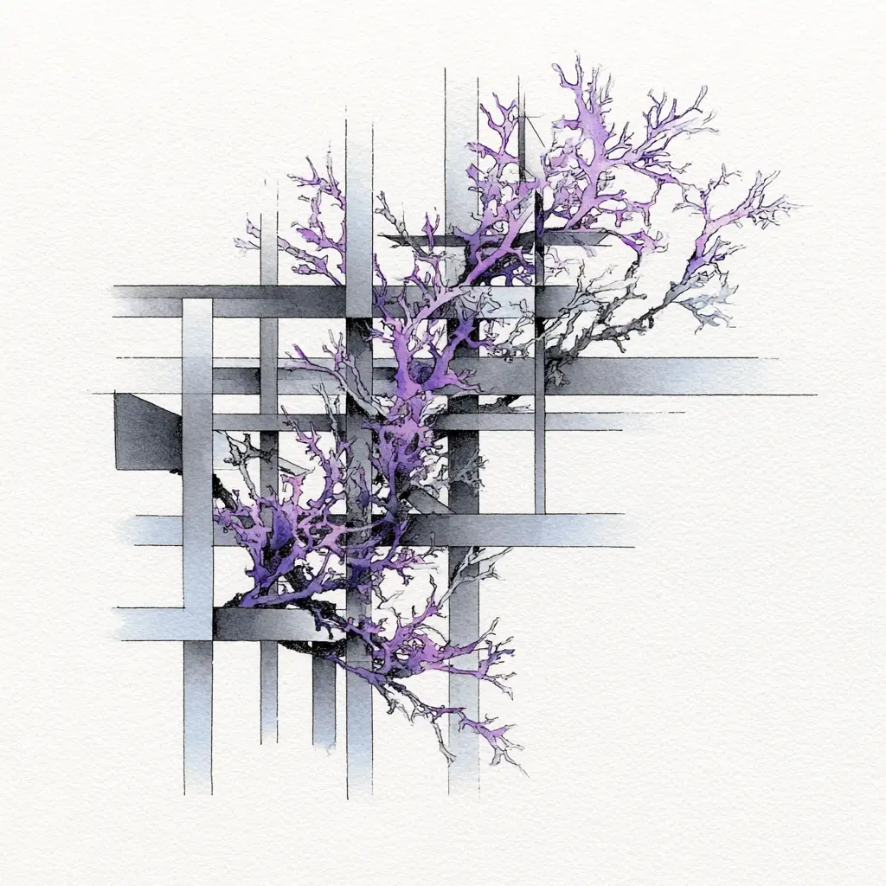

Teams everywhere are shipping faster than they ever have. Codebases are growing in ways that don't map to headcount. Junior engineers are standing up services in hours that used to take senior devs a week. Pull requests are multiplying faster than anyone can review them. Companies are posting record output, and the people doing the work are quietly wondering what all of it means.
The questions are real. What does seniority look like when a new grad with good prompts can generate the same code you can? Who owns the quality of something nobody fully read? What happens when models can express intent more fluently than most of your team? What exactly should you get great at right now?
Those questions get easier once you look at what's happened before. Not because you personally lived through every shift, but because the pattern is so consistent it's almost boring.
Developers used to manage memory by hand. Then languages and runtimes handled it, and developers took on data structures and algorithms at a higher level. Developers used to provision bare metal. Then the cloud handled it, and developers took on distributed systems, scaling, availability. Developers used to hand-roll deployments. Then CI/CD handled it, and developers took on release strategy, observability, production ownership.
Every time a layer of the work became infrastructure, the role didn't shrink. The scope of what a developer is responsible for kept expanding. Each time, the work moved up. Closer to the user. Closer to the system's real behavior. Closer to the outcome.
Code is abundant now. Not slightly easier to write, but abundant the way compute became abundant when the cloud showed up. More PRs, more generated systems, more output than any team was built to absorb.
You can look at that and see a future where developers are curators of machine output, reviewing an endless stream of generated code until the machines don't need the review anymore. Or you can look at it and see something better: a future where developers build the systems that channel all of that output toward outcomes that actually matter. Not just reading PRs, but defining what good means for their codebase, their architecture, their product. Not just prompting AI, but designing the processes, the constraints, the feedback loops that make AI output trustworthy at scale.
One of those paths ends with developers writing curly braces until the curly braces don't need them. The other ends with developers doing the most interesting work of their careers.

That's what amplified means. A way of working where AI handles the volume and you handle the signal.
No generation of developers has had this much leverage. The tools are here, the work is real, and it's yours. Go build.
 
